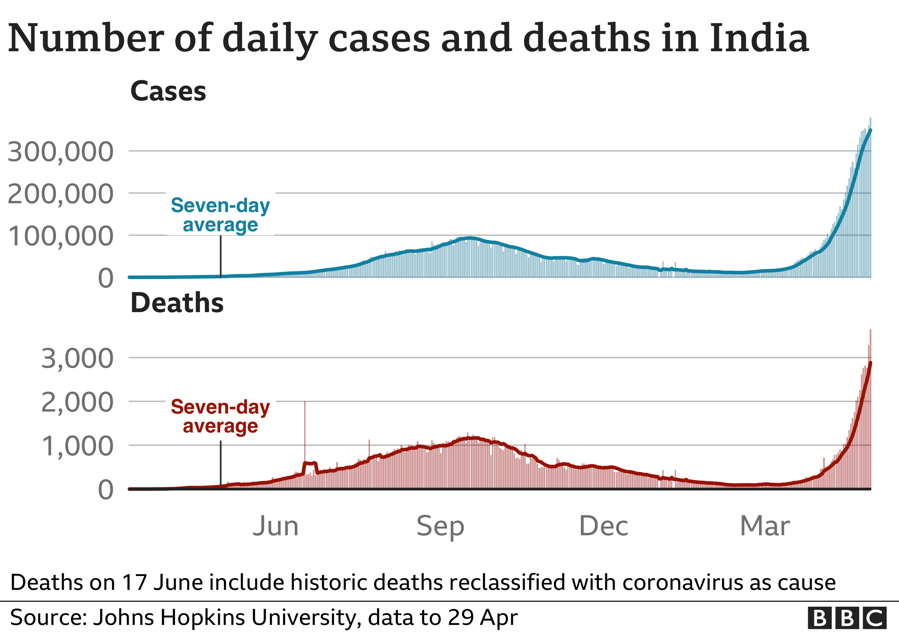

A Tribute To The Real Unsung Heroes Of The Pandemic
In the midst of the prevalent COVID pandemic, the IMA said that 798 doctors died during the
second wave across the country of which a maximum of 128 doctors lost their lives in Delhi,
followed by Bihar at 115, as per ANI. As per the IMA, Uttar Pradesh lost 79 doctors.
States like Maharashtra and Kerala where the prevalence of the Delta Plus variant of Covid-19 is
on a rise , also reported deaths of doctors in double digits.
Pondicherry reported the lowest deaths of doctors by logging one death only. Hours after Prime
Minister Narendra Modi on Sunday praised doctors for going out of their way to extend help
to people ring the coronavirus pandemic, IMA President Dr JA Jayalal said that
the PM has assured that doctors will be respected, protected and safeguarded.
A large number of factors must have contributed to the large number of deaths of doctors
across states, spread of Covid-19 infection in different states played a major role. States
and UTs like Delhi, Uttar Pradesh, West Bengal, had reported a large number of daily
Coronavirus cases during the second wave which explains high Covid-19 related casualty
figures among doctors in these states. However, there were some notable exceptions including
Maharashtra which contributed the highest number of cases to the nationwide tally in the
initial days of the second wave but the number of deaths in Maharashtra was only 23. Karnataka
which faced an upsurge of Coronavirus during the fag end of second wave also reported only 9
Covid-19 related casualties among doctors.

Many doctors share their experience of working tirelessly during the pandemic . During ,
these covid times they worked day and night , for serving the covid patients , like a soldier
who guards our country from enemies , saving millions of our lives. They worked very hard ,
though they were not self-quarantined , but had a lot of fear about taking deadly virus with
them home . They had to even sacrifice spending time with their loved one's and were brave
enough to work hard for our country . But still , in some parts of our country , the doctors
and the doctors's professionals were beaten abusively by the covid patients due to some
shortage of supplies , collecting samples from the suspected covid patients and even higher
medication fees during the covid times and this made many doctors emotional and hopeless
during those times .
Prime Minister Shri Narendra Modi has emphasised the need for vaccination to all
citizens of our country , mainly for the age group of 18 and above . He had
supported and encouraged a lot of people to compulsorily take vaccines , so that to fight
against this corona virus . The vaccines called "Covaxin" and "Covishield" were the two
most important vaccines which were supplied to our country , India . For this , the scientists
and doctors worked relentlessly hard to examine about the deadly virus and to develop any
cure for it . At presently , these vaccines are being developed to produce immunities in our
bodies , so that it can fight against any further virus .
Hence , in rememberance of our brave doctors , who had been a backbone of our country ,
during the covid times , we're celebrating this year's National Doctors' Day (July 1)
in remembrance of the veteran Dr BC Roy. We're so much pleased that PM Modi greeted the
medical fraternity for the Doctors' Day," the IMA President had said.